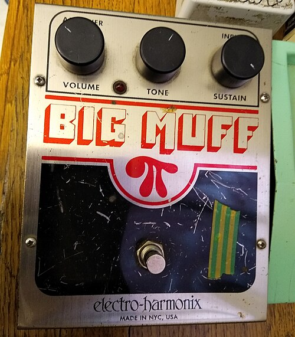
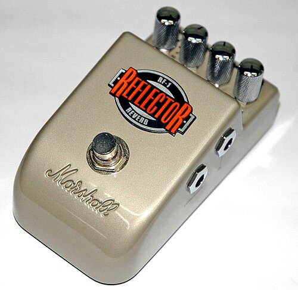
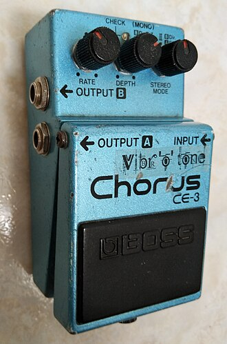
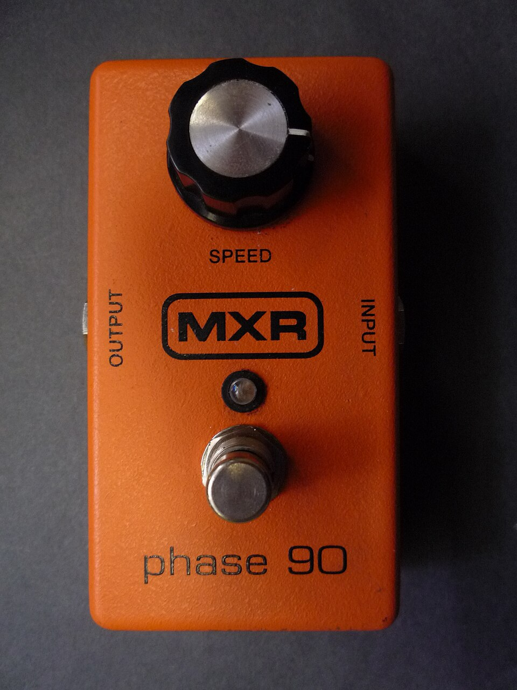
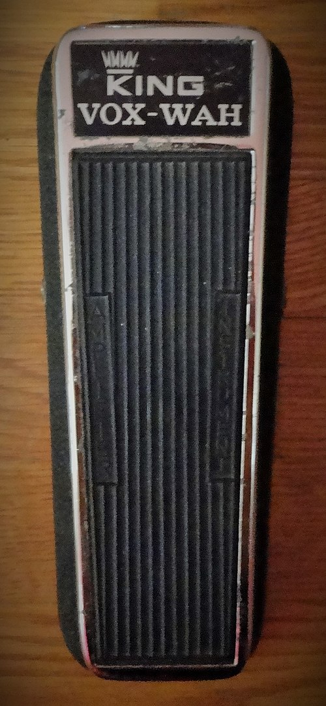
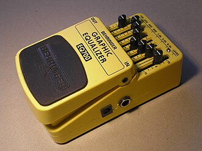
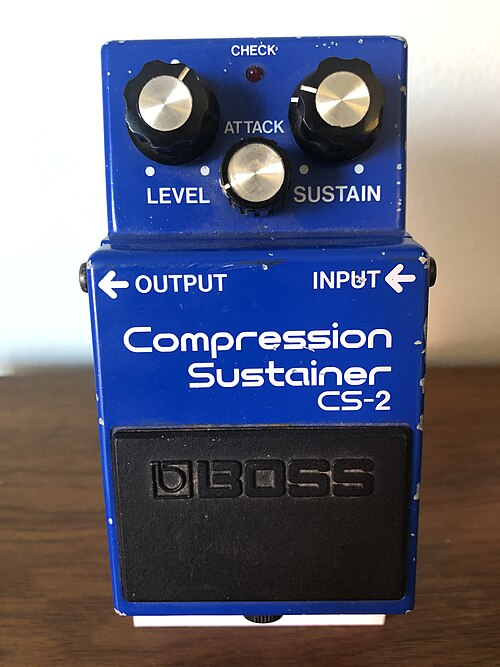

Types of Effect Pedals

Fuzz
These are extreme versions of distortion, where the signal is completely saturated until it is a fuzzy mess. Popular in 90s grunge and shoegaze.

Reverb
These produce a atmospheric, spacey sound, like playing in a large room or auditorium.


Chorus
These function similarly to delays, but the delay time is very short with some pitch shifting applied. The result is a shimmery, stereo effect that add a lot of atmosphere to a sound.

Phaser
These take the incoming signal and overlay it with a filtered copy, which results in a psychadelic sound.

Wah
These act as a band-pass filter with the cutoff frequency determined by the position of the pedal. By sweeping through the frequencies, the musician can create a "wah-wah" typ sound, similar to a human voice.

EQ
These alow the musician to boost or cut certain frequencies in the signal, which allows for very precise control over the sound of the instrument.

Compression
A compressor boost lower volume signals, and limits higher volume signals, resulting in a more even sound with less dynamic range.